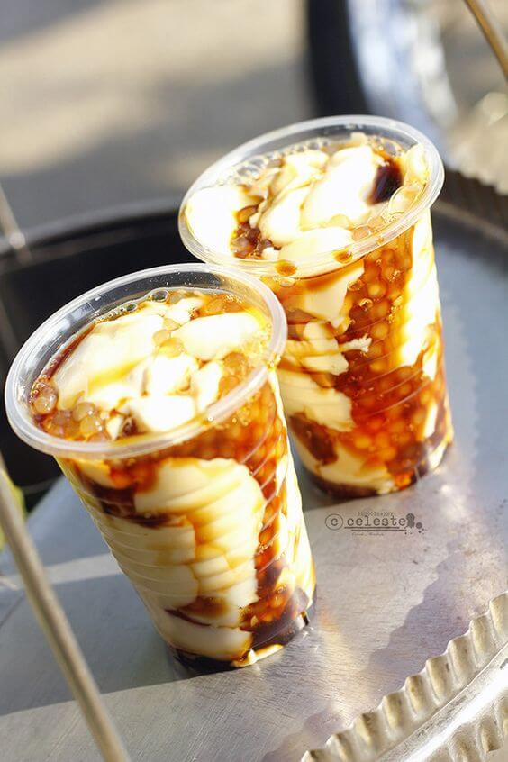

Ang taho ay isa sa mga paboritong merienda ng mga Pilipino. Ito ay binubuo ng mga mainit na tokwa (soybean
curd), arnibal (sweet syrup), at sago (tapioca pearls). Ang taho ay karaniwang inilalako ng mga magtataho na
naglalakad sa mga kalye o nasa mga kariton na may malaking taho container sa kanilang balikat.
Ang kasaysayan ng taho ay may kaugnayan sa mga Tsino at ang kanilang pagluluto ng tokwa. Noong unang panahon,
ang tokwa ay isa sa mga inihanda ng mga Tsino sa kanilang mga negosyo at pamumuhay sa Pilipinas. Dahil sa
kalapit na ugnayan ng mga Pilipino sa mga Tsino, ang pagkonsumo ng tokwa ay naging bahagi ng kulturang
Pilipino.
Ang proseso ng paggawa ng taho ay maaaring komplikado. Unang-una, dapat lutuin ang tokwa mula sa mga soybeans
na sinisimulan sa pagbababad, paglalaga, at pagpisa. Matapos ang pagluluto, ang tokwa ay hihiwain nang
maliliit at ilalagay sa malaking lalagyan.
Ang arnibal naman ay gawa sa asukal na pinalalambot at pinakukuluan kasama ang tubig. Ito ay nilalagay sa loob
ng ibang malaking lalagyan at dahan-dahang iniikot habang pumapatak ang arnibal, na nagbibigay ng matamis na
lasa sa taho.
Ang sago naman ay ibinubuhos sa mainit na tokwa at arnibal. Ang mga maliit na puting pearls na gawa sa tapioca
ay niluluto sa kumukulong tubig at nilalagay sa ibang lalagyan. Kapag handa na ang lahat ng sangkap, inihahalo
ang mga ito nang maayos, at ang taho ay handa nang ihain.
Ang taho ay karaniwang inilalako sa umaga at kinakain bilang almusal o meryenda. Ang pagkain ng taho ay isang
tradisyon sa mga pamayanan at nakakapagdulot ng kasiyahan sa mga taong kumakain nito. Ito ay mabisang
nagbibigay ng sustansiya at lakas dahil sa mataas na konsentrasyon ng protina mula sa tokwa at sago.
Sa kasalukuyan, ang taho ay hindi lamang inilalako sa mga lansangan kundi maaari rin itong mabili sa mga
tindahan at mga food court. Mayroon ding mga modernong bersyon ng taho na may iba't ibang flavor tulad ng
strawberry, chocolate, at ube, na nagbibigay ng iba't ibang lasa at pampalamig.
Sa huling salita, ang taho ay hindi lamang isang masarap at malusog na pagkain, ito rin ay naglalarawan ng
kasaysayan at kultura ng Pilipinas. Ito ay patunay ng pagkakaisa ng mga pamayanan sa pagtangkilik ng mga
tradisyunal na pagkain at pagmamahal sa mga lokal na sangkap. Ang taho ay isang simpleng kasiyahan na
nagbibigay ng kaligayahan at ligaya sa mga Pilipino.
Taho: Ang Tamis at Kasaganahang Inumin ng mga Pilipino
